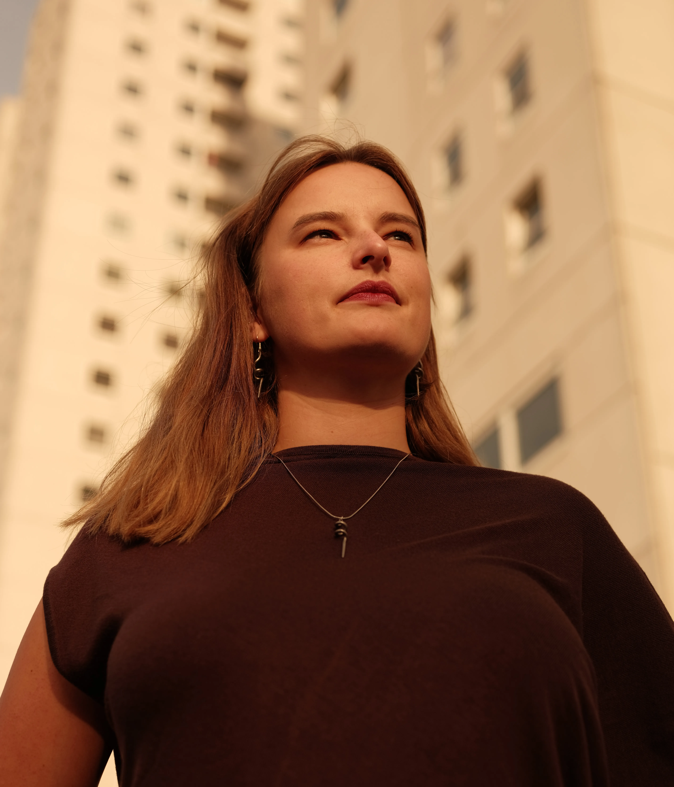
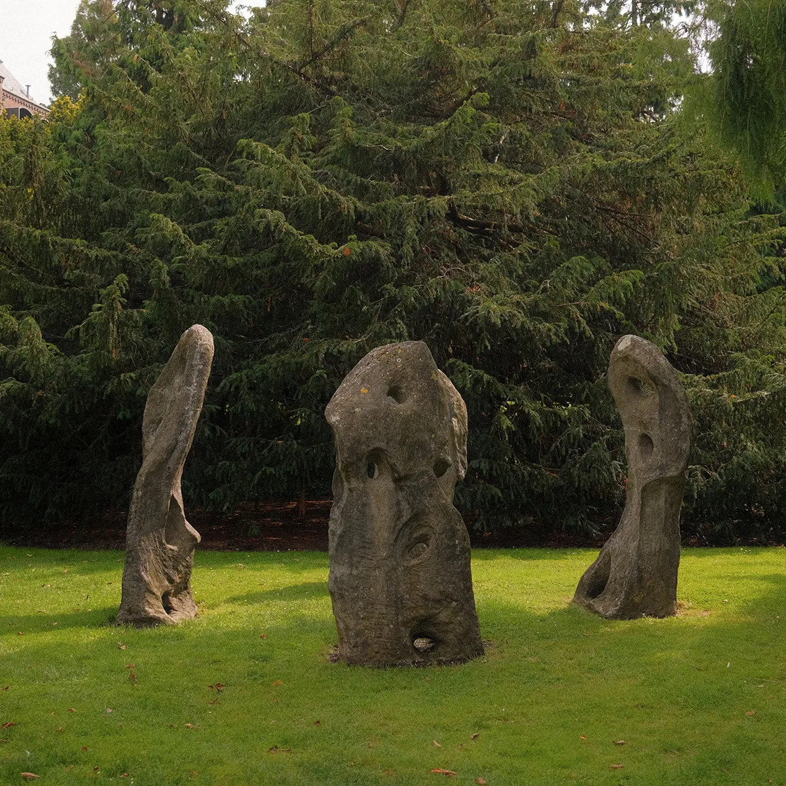
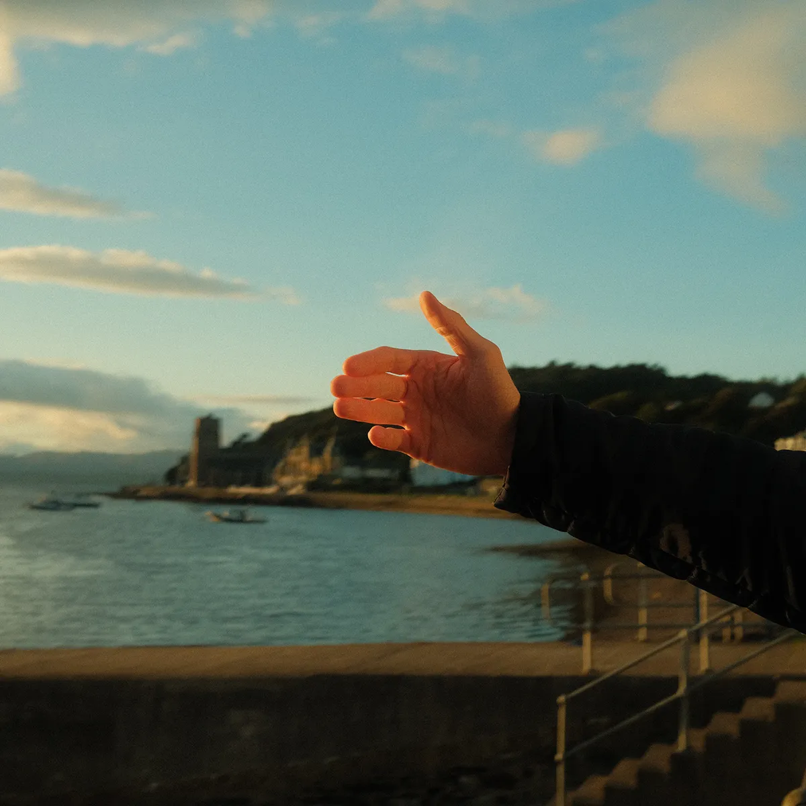
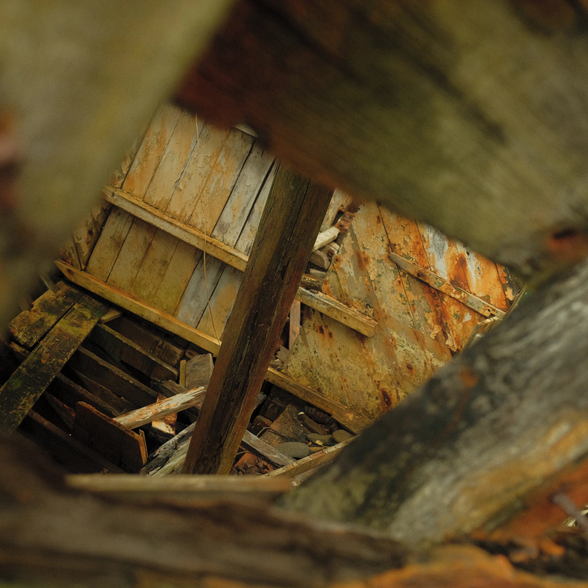
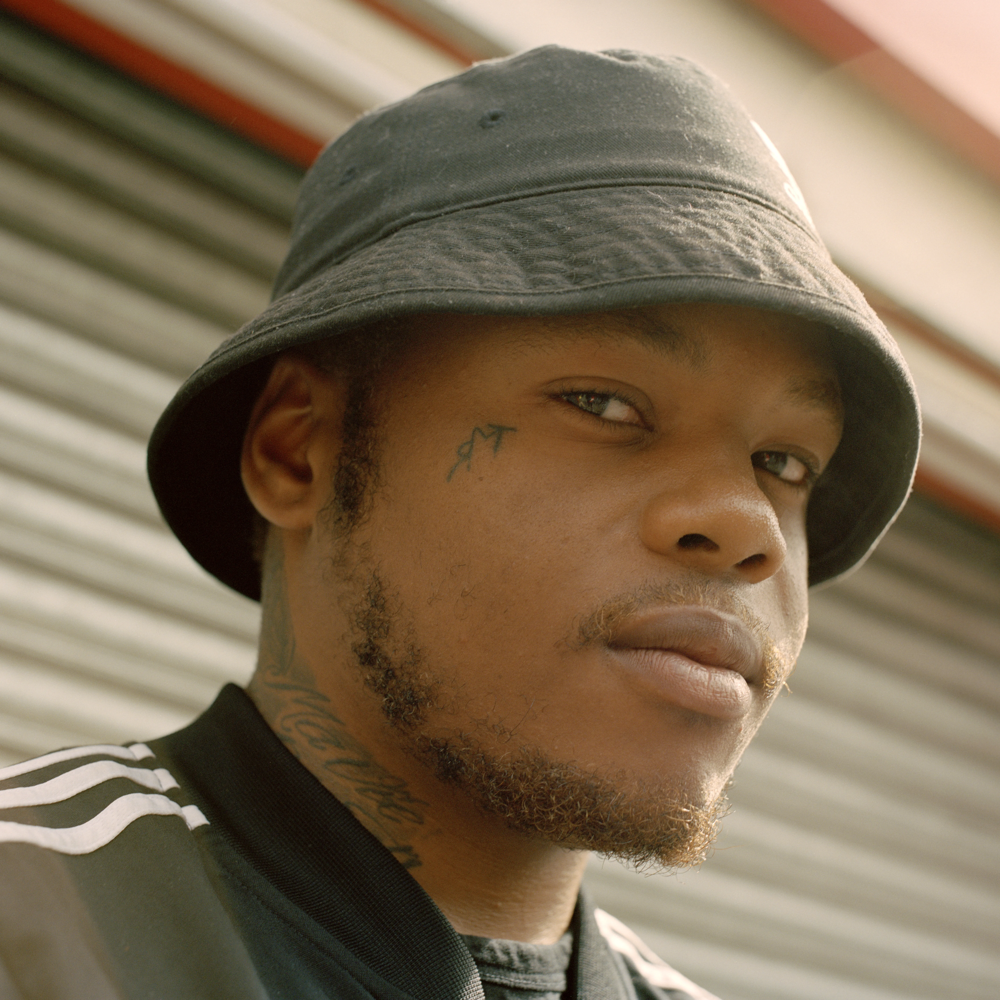
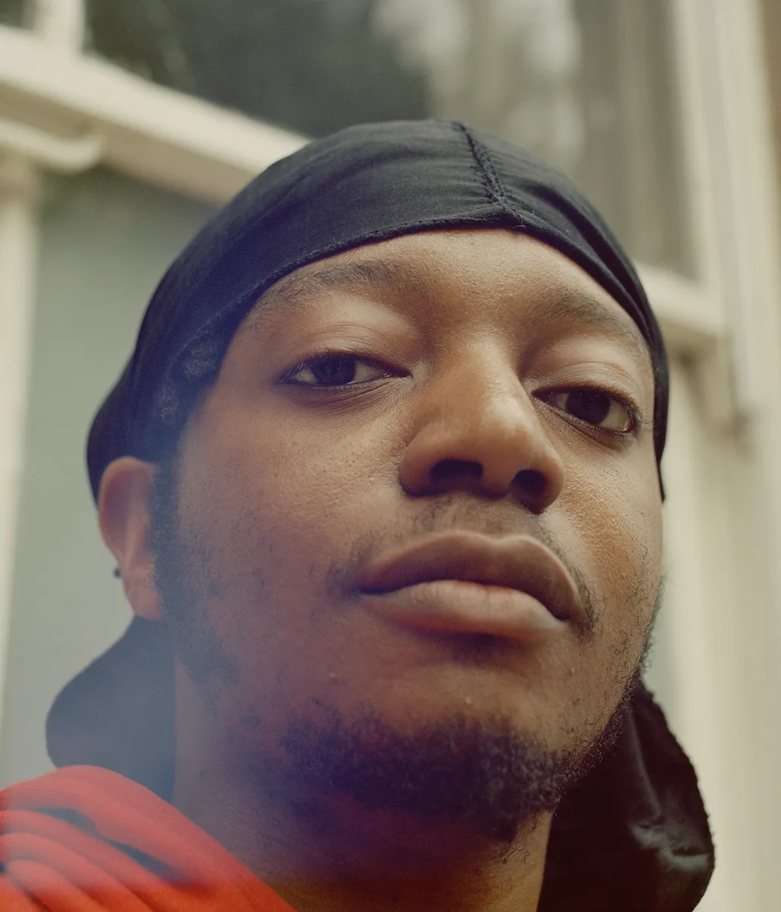
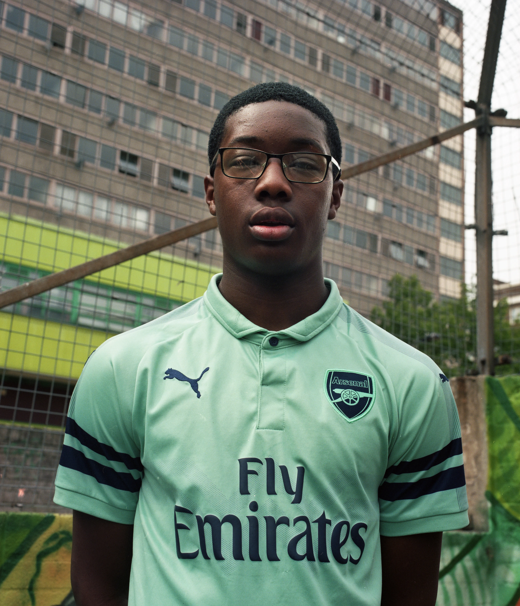

Rotterdamse plaatjes- en praatjesmaker.
Hi, mijn naam is Roeland. Ik ben in 2020 afgestudeerd als fotograaf aan de HKU en als mensen mijn stijl omschrijven dan hebben ze het altijd over een bepaalde sfeer. Hopelijk geniet je van mijn warme en verwonderde blik op de wereld om mij heen en wie weet kunnen we iets voor elkaar betekenen. Neem vooral contact op bij vragen.









 kopie.webp)


